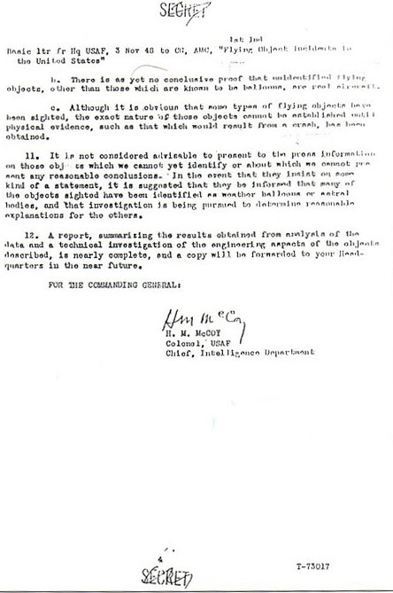

In attempting to arrive at conclusions as to the nature of unidentified flying object incidents in the United
States, this Command has made a study of approximately 180 such incidents. Data derived from initial reports have
been supplemented by further information obtained from check lists submitted by mail, from interrogations of other
field agencies, and by personal investigation by personnel of this Command in the case of incidents that seem to
indicate the possibility of obtaining particularly significant information.
The objects described fall into the following general classification groups, according to shape or physical
configuration:
Flat disc of circular or approximately circular shape.
Torpedo or cigar shaped aircraft, with no wings or fins visible in flight.
Spherical or balloon shaped objects.
Balls of light with no apparent form attached.
Some of the objects sighted have definitely been identified, upon further investigation, as weather or upper air
scientific balloons of some type. A great many of the round or balloon shaped objects indicated in paragraph 2c
above are probably of the same nature, although in most cases, definite confirmation of that fact has been
impossible to obtain.
Page 3 de la lettre d'origine Some of the objects have been identified as being astro-physical in nature. For
example, in daylight sightings, the planet Venus has been reported as a round, silvery object at extremely high
altitude. Action is being taken to obtain the services of a prominent astro-physicist as a consultant, to study
all of the incidents to determine whether some can be identified as meteors, planets or other manifestations of astral bodies.
Arrangements for accomplishing a study of the psychological problems involved in this project are being made in
coordination with the Aero-Medical Laboratory at this Headquarters. The possibility that some of the sightings are
hallucinations, optical illusions or even deliberate hoaxes has been considered.
Although explanation of many of the incidents can be obtained from the investigations described above, there
remains a certain number of reports for which no reasonable everyday explanation is available. So far, no physical
evidence of the existence of the unidentified sightings has been obtained. Prominent scientists, including Dr. Irving Langmuir of the General Electric Company, have been
interviewed to determine whether they could advance any reasonable explanation of characteristics exhibited by the
objects sighted. In an early interview, Dr. Langmuir indicated
that these incidents could be explained, but insufficient data were available at that time on which to base definite
conclusions. It is planned to have another interview with Dr. Langmuir in the near
future to review all the data now available, and it is hoped that he will be able to present some opinion as to the
nature of many of the unidentified objects, particularly those described as "balls of light."
All information that has been made available to this Headquarters indicates that the discs, the cigar shaped
objects, and the "balls of light" are not of domestic origin. Engineering investigation indicates that disc or
wingless aircraft could support themselves in flight by aerodynamic means. It is probable that the problems of
stability and control could also be solved for such aircraft. However, according to current aerodynamic theory in
this country, aircraft with such configurations would have relatively poor climb, altitude and range characteristics
with power plants now in use.
The possibility that the reported objects are vehicles from another planet has not been ignored. However,
tangible evidence to support conclusions about such a possibility are completely lacking. The occurrence of
incidents in relation to the approach to the earth of the planets Mercury, Venus and Mars have been plotted. A
periodic variation in the frequency of incidents, which appears to have some relation to the planet approach curves
is noted, but it may be purely a coincidence.
Page 4 de la lettre d'origine  Reference is made to "The Books
of Charles Fort" with an introduction by Tiffany Thayer,
published 1941, by Henry Holt & Co., New York, N.Y. It appears that similar phenomena have been noted and
reported for the past century or more.
In view of the above, the following conclusions are drawn:
In the majority of cases reported, observers have actually sighted some type of flying object which they
cannot classify as an aircraft within the limits of their personal experience
There is as yet no conclusive proof that unidentified flying objects, other than those which are known to be
balloons, are real aircraft.
Although it is obvious that some types of flying objects have been sighted, the exact nature of those objects
cannot be established until physical evidence, such as that which would result from a crash, has been
obtained.
It is not considered advisable to present to the press information on those objects which we cannot yet identify
or about which we cannot present any reasonable conclusions. In the event that they insist on some kind of a
statement, it is suggested that they be informed that many of the objects sighted have been identified as weather
balloons or astral bodies, and that investigation is being pursued to determine reasonable explanations for the
others.
A report, summarizing the results obtained from analysis of the data and a technical investigation of the
engineering aspects of the objects described, is nearly complete and a copy will be forwarded to your Headquarters
in the near future.
FOR THE COMMANDING GENERAL:
H. M. McCoy Colonel, USAF Chief, Intelligence
Department
 Some of the objects have been identified as being astro-physical in nature. For
example, in daylight sightings, the planet Venus has been reported as a round, silvery object at extremely high
altitude. Action is being taken to obtain the services of a prominent astro-physicist as a consultant, to study
all of the incidents to determine whether some can be identified as meteors, planets or other manifestations of astral bodies.
Some of the objects have been identified as being astro-physical in nature. For
example, in daylight sightings, the planet Venus has been reported as a round, silvery object at extremely high
altitude. Action is being taken to obtain the services of a prominent astro-physicist as a consultant, to study
all of the incidents to determine whether some can be identified as meteors, planets or other manifestations of astral bodies.